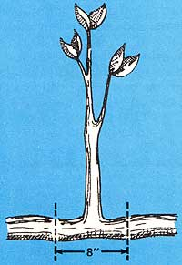

When that freakish May snowstorm passed through our neck of the woods last year, one of the first "casualties" on the farm was our favorite apple tree (the one our two young sons had called their "sourapple"). The old tree had had a bad crotch (which the person who'd planted it about 50 years ago had either ignored or failed to notice) about three feet from the ground . . . and sure enough, one real he-storm was all it took to send a fissure clean through the weakened area.
Not that the loss of the tree mattered all that much where our homestead's fruit production was concerned. (I'd been planning to plant a new orchard of dwarf pear and apple trees soon anyway .) Nonetheless, it seemed a shame to have to let a perfectly good half of an apple tree go to waste. "Surely," I told myself as I cut branches off the storm's victim to give to my goats, "there must be a way to salvage this proud old apple-bearer."
As I looked at the fallen tree half, I happened to notice that the force of hitting the ground had buried one branch fairly deeply, and the leaves on that particular branch seemed greener and in better shape than the rest. That's when it hit me: "Maybe there's a way to propagate a part of this old tree!" I exclaimed.
My Uncle Paul-an old farmer from way back-had the answer I needed (it seemed he'd been saving storm-damaged orchard stock all his life). He described in detail how I could save my apple tree, and the minute I got back from visiting him I began putting his advice to work.
The first step is to choose a fairly straight, smooth branch that-when looked at with two or three years' growth in mind-has no bad features about it . . . such as a weak crotch (where two or three branches come out of the trunk at the same place), a scar where the bark is missing, or too long a stretch with no smaller branches on the sides.
Once you've selected a suitable branch, the next step is to make a cut on either side of it at the base, leaving a 6" or 8" section of limb where your new tree's roots would normally be (see diagram). This will give you a scion shaped like an upside-down "T".
Now dig a hole about 18" deep where you want the tree to grow, and throw compost or well-rotted manure into the excavation until it's only 12" deep. Cover this with another two inches or so of dirt, and position the scion's "T"shaped base in the hole. Pack more soil firmly around the "T". (At this point, some folks like to place a three- to five-pound rock on the tree's roots-or stub, in this case-on the side of the tree that's expected to receive the strongest wind. If you care to do this, first place an inch or two of soil over the roots or stub to provide a "cushion" of earth between the tree and the rock. Then lay the stone down.)
Finally, fill the hole with dirt and pour in a little water every once in a while (just as you'd do whenever you plant any tree). A whole pailful of the liquid isn't too much, if you have fairly good soil drainage. If-on the other hand-you have to contend with a heavy, clay soil, use about half as much water.
Your new tree won't need any more care than any newly planted tree or shrub. Now and then, check to see that any small branches which seem to be dying are plucked off . . . keep the base of the plant free of suckers . . . and water as needed. That's all there is to it!
Thanks to Uncle Paul's tree-propagation method, a tree-half that might have been consigned to the dump (or at least to our goats) is now a "brand new", fruit-producing (we hope) apple tree on our homestead once again. Next time you're faced with having to throw a storm-damaged tree away, give Uncle Paul's technique a try. You just may save the tree's life!
|
 |
|
|